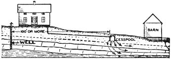
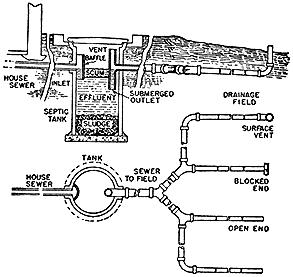
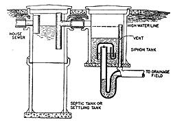

|
 GOOD - This well is located where it is not likely to be polluted by the sewage disposal system or livestock in the barn. Cesspool is over 100 feet from the well. |
 Here is a simple septic system with only one tank and a tile drainage field. Inside the septic tank are anerobic bacteria which decompose a part of the solids into liquids and gasses. Incidentally these bacteria are killed by pouring strong disinfectants and mouth washes down the drain in your house. |
 Here is a septic tank with a separate siphon discharge system. Another workable combination is a single septic tank like the one shown above which drains into a cesspool instead of a tile drainage field. The whole problem of proper sewage disposal is so important to health that it will pay you to go into the subject pretty thoroughly before you decide which system to use. |